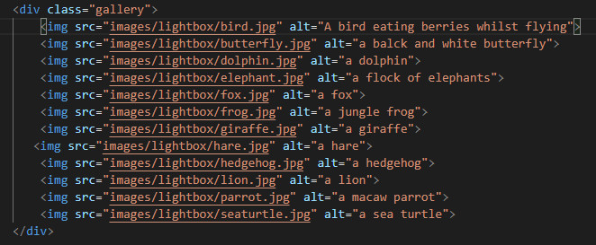
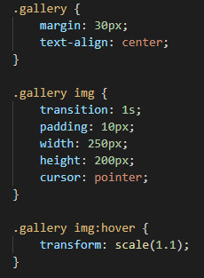

Hamburger menu
A hamburger menu is a type of symbol often used on smaller screens so that the navigation doesn't take up too much space. The navigation links are 'hidden' and only appear when you click on the hamburger.
I followed the following tutorial in order to create this effect: Responsive Navigation Bar Tutorial
- Create a hamburger menu icon in HTML
Create the navigation links using an unordered list.
Then create three empty divs which will become the hamburger menu.
They can be placed before or after the navigation list depending on where you want the menu to show up.
These will be styled with CSS.
- Style the navigation
Style the navigation so that the background and links are to your liking.
Here is the styling I chose for mine:
- Style the hamburger menu
The hamburger menu is styled by applying a background color to each of the divs within the hamburger.
It is set to display: none on larger screens so that it is not visible at the same time as the text links.
- Making the hamburger menu appear on smaller screens
This is done by using a media query which changes the styling on screens smaller than 768px (standard ipad size).
The position of the navigtion links is moved off the screen using the transform: translateX() property in CSS.
The hamburger menu is made visible.
- Adding an active class
In order to make the navigation appear when we click on the hamburger menu we create a class that will be added by Javascript.
This class is not attached to the HTML when the page loads so the navigation is hidden off screen.
When this class is added using Javascript it moves the links back onto the screen by changing the transform: translateX() property.
- Adding the CSS class using Javascript
In order to add and remove the class to the HTML hamburger element we add an event listener using Javascript.
When the hamburger is clicked the first time, the active class is added and the navigation links are shown on screen.
When the hamburger is clicked a second time, the active class is removed and the links disappear from view again.
This is done using classList.toggle which toggles between adding and removing the class after every click.
Image slider
An image slider is a way to display one photo at a time from a set of photos. It is also known as a carousel. They can be set up to advance on a button press or automatically after a set amount of time.
I followed the following tutorial in order to create this effect:
How to create an Image Slider in HTML, CSS and Javascript
- Adding the images in HTML
Add all the images you want included in the html using the img tag.
Include two buttons, one to move the slideshow forwards and one to move it backwards.
These can be buttons or can be icons that you style.
In this projects I used arrow symbols from Font Awesome.
The buttons can be placed above or below the images as preferred.
They can then be styled and positioned using CSS.
The first and last images are included twice, with ids of first-clone and last-clone respectively.
This is so that the slider can loop infinitely through the images and will be targeted later with Javascript.
- Style the image slider and images
Style the image slider container and images using CSS.
You can play around with the height and width until you are happy with the result and the images display correctly.
The images are displayed as flex so that they sit side by side across the page instead of down.
The overflow: hidden property makes sure that just one image is seen at a time.

- Style the buttons
This is the styling I used to position the arrows over the image slider.
You can play around with the sizing and colors until you are happy with it.
- Selecting the different elements of the slider
We use query selectors to find the HTML elements we want to manipulate using Javascript.
We set a counter so that it keeps track of which image is showing.
- Add event listeners to the buttons
We want the images to change when we click on the next or previous buttons.
To do this we add event listeners to both buttons so that when they are clicked something happens.
When you click on the 'next' button the counter increases by 1 and the image moves forward by one.
When you click on the 'previous' button the counter decreases by 1 and the image moves backwards by one.
The if statements stop the carousel from showing empty if the buttons are clicked too fast that the carousel can't keep up.
- Looping the image slider
This Javascript targets the cloned images in the HTML with the id of first-clone and last-clone.
The Javascript adds an event listener which is triggered when a transition ends.
If the image has an id of last-clone, it will hop back to the last image.
We do counter = carouselImages.length - 2 so that it hops over the first-clone and back to the last original image in the HTML.
If the image has the id of first-clone, it hops back to the first image.
By doing this it appears that the images loop infinitely, when in reality it is just jumping back to the start of the image slider.

Lightbox
Lightbox is another technique for displaying images.
It means you can show many images together side by side as thumbnails.
When an image is clicked on you see just that one image in its original size.
I followed the following tutorial in order to create this effect:
Simple Image Lightbox Tutorial
- Adding the images using HTML
It is very simple to create the image gallery for the lightbox technique.
Simply place all your images inside a div.

- Styling the images with CSS
Style the images as you want them to appear on the page when viewed in thumbnail form.
The size here will not affect the size that the image is shown in the lightbox.

- Styling the lightbox with CSS
We create an id in CSS called lightbox.
This will be added to the gallery using Javascript.
Style the lightbox background and images so that they appear how you want them to. You can experiment with background color and borders for example.
The lightbox should have a fixed position show that it shows over the entire page.
The z-index should be high so that it is shown on top of everything else.
The display is set to none because we don't want the lightbox to show all the time.
- Making the lightbox active with Javascript
The first thing we do here is create a new div element, give it the id of lightbox and append it to the body of the HTML document.
We then select all the images on the page using a query selector and add an event listener to each one.
The event listener adds a class of active to the lightbox div so that the lightbox effect is made visible.
It uses the same image source as the image that was clicked.
The while loop is included so that only one image is shown in the lightbox at a time. The while loop removes the previous image that was shown.
Finally we add an event listener to the lightbox so that if it is clicked the active class is removed and the lightbox closes.